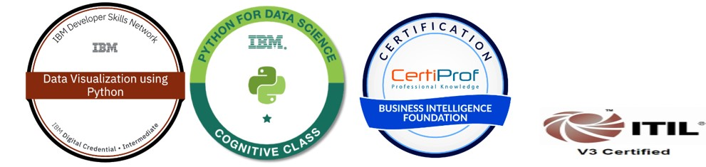

Retention Data Analyst & Lecturer
Dedicated Data Analyst with a strong background in utilizing Python for data analysis and visualization. Proficient in extracting actionable insights from large datasets, developing data-driven strategies, and creating compelling visualizations. Adept at leveraging Python libraries such as Pandas, NumPy, and Matplotlib to streamline data workflows and enhance decision-making processes. Currently serving as a Retention Data Analyst and Lecturer at QA HE Ltd.
• Plan, prepare, deliver computing skills such as Python, Power BI, web development etc. • Conduct exploratory data analysis on student progression and retention datasets using Python to identify patterns, trends and anomalies. • Collaborate with cross-functional teams to define data requirements and deliver actionable insights to support business decision-making. • Utilize statistical techniques to develop predictive models for key business metrics. • Present findings and data driven recommendations in the committee meetings through clear and concise reports and visualizations. • To develop and deliver computing-related workshops and training videos.
• Facilitated onshore Release Management lifecycle duties. • Debugged code and located root causes of problems. • Collaborated with project stakeholders and created presentations for platform release communications. • Produced and understood run book / implementation instructions and procedures.
• Provide support for the CC3 & CC4 network ensuring the effective running of ICT facilities. • Built workstations and supported desktops, laptops and other network peripherals. • Set up user accounts, groups, group policy, permissions, passwords in Microsoft Active Directory • Installed & troubleshooted e1 & Pearson Phoenix Gold. • Set up and maintained ICT systems throughout the school, including daily backups.
• Develop collaborative application components as designed and requested by senior colleagues using Java and JavaScript. • Managed CMMS software to provide planned maintenance in the client side. • Test applications to ensure that designs are functional, and requirements met and that no technical errors occur • Processing and controlling Background jobs – Approva 4.3. • Work with colleagues and client technical and business personnel to confirm designs, requirements and review and test work produced
Delivering lessons to groups • Delivering pre-determined learning/care/support programs • Implementing literacy/numeracy programs • Assisting with the planning cycle
•MSc, Telecommunications & Computer Networks Engineering (2002- 2004)
London South Bank University, UK
•Bachelor of Engineering, Electronics and Communication (1995- 1999)
Periyar Maniammai College of Technology for Women, India
•Diploma in Computer Studies (2001)
Periyar Maniammai College of Technology for Women, India
• IBM Python for Data Science • IBM Data Visualization using Python • EC-Council -Python • Business Intelligence Professional Certification – BIFPC • ITIL V3
Email: your.email@example.com
LinkedIn: linkedin.com/in/yourname